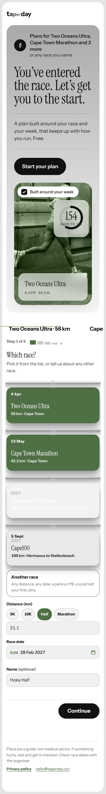
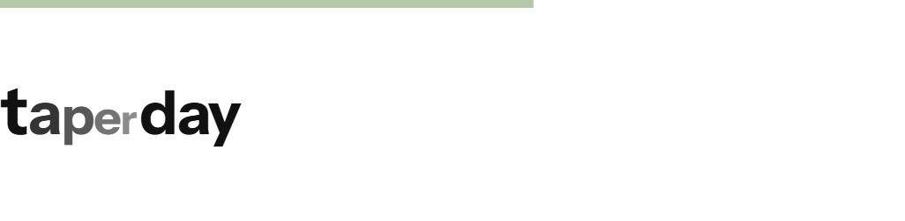
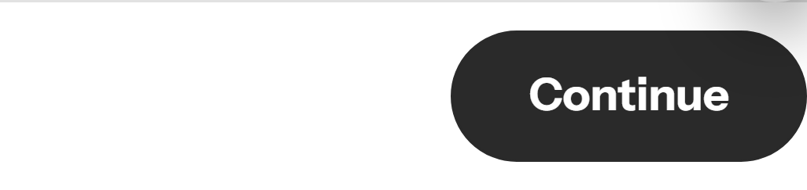
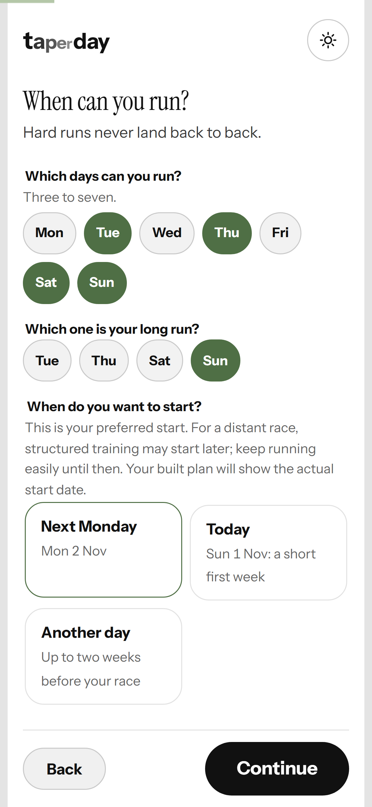
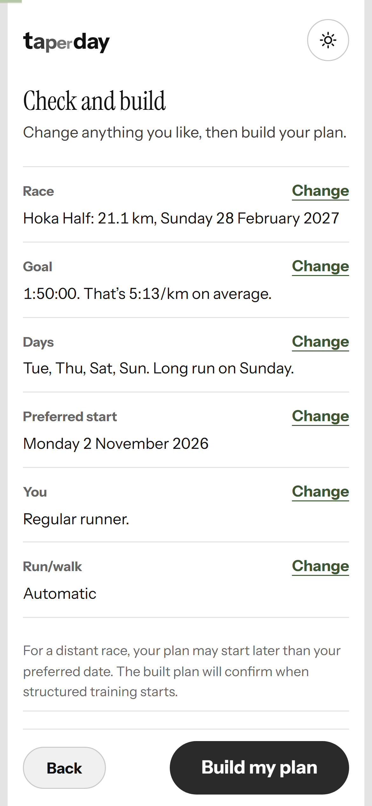
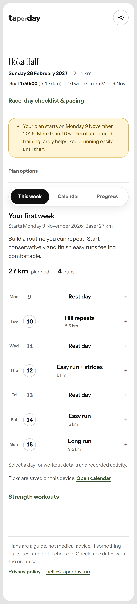
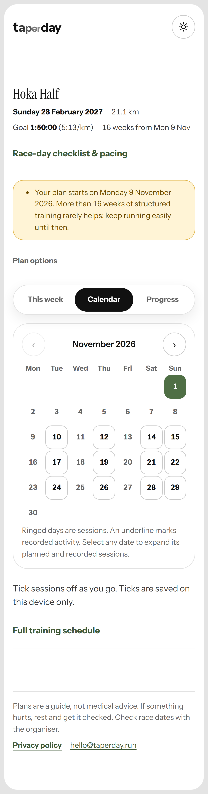

t
a
p
e
r
day
Built around your week
Most plans are written for nobody.
Not your race.
Not your week.
It asks which race.
And when you run.
Then it builds.
Your race.
Your week.
Every session paced from your goal, week by week to race day.







taperday.run · Free